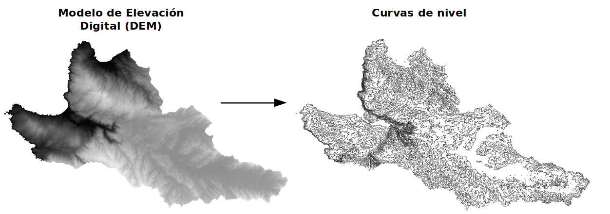

Entre las operaciones de transformación se encuentran por ejemplo la vectorización y los cambios de formato y proyección. Estas operaciones no modifican la información temática de la capa pero si su georreferencia.
Vectorización
Proceso que implica la transformación de una cobertura ráster a una vectorial, por ejemplo la extracción de curvas de nivel a partir de un modelo de elevación digital.

Cambios de formato y proyección
Procesos que implican cambios en el formato nativo del ráster o una reproyección de este a un sistema de referencia espacial distinto.
Para aprender a realizar este tipo de operaciones, le invitamos a que revise el siguiente videotutorial: